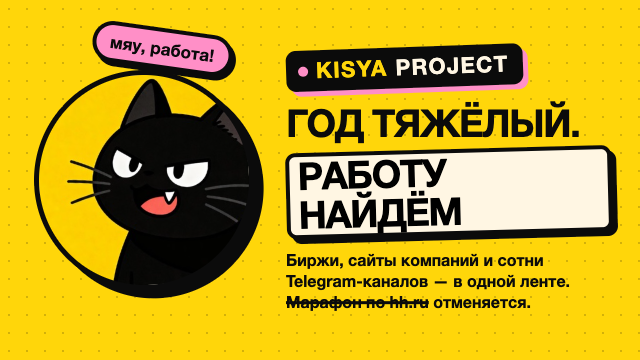

Год для поиска работы тяжёлый. Кися ищет за тебя.
Kisya Project — Telegram-бот @KisyaProject_Bot и мини-приложение для поиска работы. Он сам обходит биржи, сайты компаний и более 700 Telegram-каналов с вакансиями и присылает только то, что подходит именно тебе. Марафон по hh.ru отменяется.
Открыть в Telegram → Открыть кабинет здесьКабинет работает и в Telegram, и прямо в браузере — вход через Telegram, без паролей. Свежие удалённые вакансии

Где Кися ищет вакансии
Telegram-каналы
Более 700 каналов с вакансиями — и список растёт сам. Рекламу курсов и посты «ищу работу» бот отсеивает.
Сайты работодателей
Карьерные страницы тысяч компаний по всему миру (Greenhouse, Lever, Ashby, Workday и другие). Ссылка ведёт прямо к работодателю.
Биржи
Работа России, Habr Career, Hacker News «Who is hiring», We Work Remotely, Himalayas, Remotive, Jobicy, RemoteOK и другие.
Только свежее
Новые вакансии проверяются каждый час. В ленте — последние две недели, в рассылке — последние три дня.
Для каких профессий
Для любых — около 60 специальностей в 13 направлениях:
Как это работает
1. Анкета за пару минут
Профессии, удалёнка или город, русскоязычные и/или англоязычные вакансии, минимальная зарплата, стоп-слова.
2. Лента в мини-приложении
Все подходящие вакансии в одном месте: избранное, «скрыть», ссылки на работодателя.
3. Подборки в Telegram
Раз в 1–24 часа, сколько вакансий за раз — решаешь сам. Ночью не беспокоит.
Подборки по запросам
- Работа графическим дизайнером удалённо: где искать
- Вакансии в Telegram-каналах: как не утонуть в рекламе
- Где искать работу, кроме hh.ru
- Свежие удалённые вакансии по направлениям (обновляется)
Частые вопросы
Что такое Kisya Project?
Telegram-бот @KisyaProject_Bot и мини-приложение для поиска работы. Он сам собирает вакансии из бирж, сайтов компаний и сотен Telegram-каналов и присылает только подходящие под твою анкету.
Где искать работу, если на hh.ru ничего не находится?
Много вакансий публикуется только в Telegram-каналах и на карьерных сайтах самих компаний. Кися собирает их в одну ленту.
Как найти удалённую работу?
Выбери в анкете «Удалённо» — бот будет присылать удалённые вакансии и проекты и отсеивать офис в чужом городе.
Бот откликается за меня?
Нет: бот находит вакансии и даёт ссылку на работодателя, откликаешься ты. ИИ-помощник для отклика по резюме — в разработке.
Как начать?
Открой t.me/KisyaProject_Bot, нажми «Старт», потом «Кабинет» — и заполни анкету.
In English
Kisya Project (@KisyaProject_Bot) is a Telegram job-search bot and mini app. It aggregates fresh vacancies from job boards, employer career sites (Greenhouse, Lever, Ashby, Workday and more), Hacker News “Who is hiring” and 700+ Telegram job channels, and sends you only the ones that match your profile — profession, remote or your city, Russian- or English-language postings, minimum salary. Works for any profession.
Хватит листать — пусть ищет Кися
Один бот · одно приложение · вся лента в Telegram.
Открыть в Telegram Открыть здесь